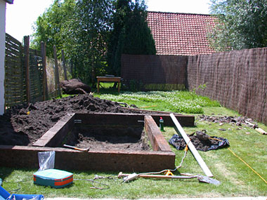
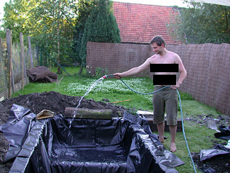

Vijver – Day Two
dinsdag 15 juli 2003 | Persoonlijk
D-day (Dig-Day). Onder een blakende zon (30°) een paar kubieke meter aarde verplaatsen wordt u ten stelligste afgeraden door uw huisarts. Let op de lichtroze tint op mijn schouders ;-)


Wouter Demuynck op 18 juli 2003
Bedankt voor de zwarte balkjes :)